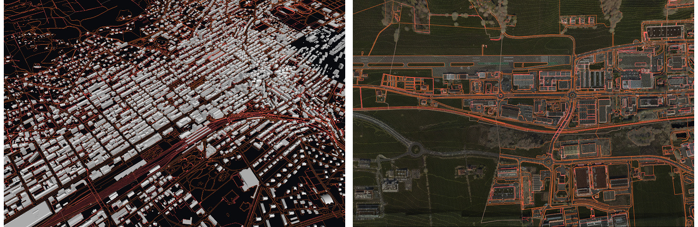

TASK-4RAS - HR, NH
Schedule : September 2020 to September 2021 (Initially planned from August 2021 February 2022)
Context
The 4D platform developed at EPFL with the collaboration of Cadastre Suisse is able to ingest both large scale point-based and vector-based models. During the previous development, the possibility to have this different type of data in a single framework lead to interesting results, showing the interest to have the possibility to put this different type of data into perspectives.

Illustrations of mixed models in the 4D platform : INTERLIS, Mesh and LIDA - Data : SITN
Taking into account point-based and vector-based model allows to almost cover all type of data that are traditionally considered for land registering.
The only type of data that is currently missing are the two-dimensional rasters. Indeed, due to their nature, image are more complicated to put in perspective of other three-dimensional data. The goal of this task is then to address the management of the raster by the platform in order to be able to ingest, store and broadcast any type of data with the 4D platform.
Specifications
In order to address this task, a step-by-step approach is defined. In the first place, a set of data has to be gathered from the STDL partners :
-
Gathering a dataset of geo-referenced ortho-photography of a chosen place of reasonable size
-
The dataset has to provide ortho-photography for at least two different times
-
The format of the dataset has to be analysed in order to be able to extract the image pixels with their position (CH1903+)
As the platform indexation formalism is not straightforward, the images are treated as point-based model, each pixel being one colored point of the model. This will allows to provide a way of starting to analyse and understand the indexation formalism while having first results on image integration :
-
Transform images into simple point-based models (each pixel being one point)
-
Injection of the point-based model in an experimental instance of the platform
-
Understanding the indexation formalism for point-based model and, subsequently, its adaptation for the vector-based models
As the indexation formalism is understood for point-based model, the following adaptation will be performed :
- removing the third dimension from the point-based indexation specifically for the image (flat indexation)
At this point, a first reporting is required :
-
Is there a advantage to add raster to such platform in perspective of the other types of model (points, vectors, meshes) ?
-
How the adaptation of the point-based indexation performs for images ?
-
How taking advantage of color accumulation enrich the image integration ?
-
What is the cost of rendering the image with the adaptation of the point-based indexation ?
Based on the formulated answer, the following strategical choice has to be discussed :
- Would it be more efficient to integrate image keeping them as raster (deviation from the current indexation) ?
Depending on the answer, a new set of specification will be decided (if this direction is flavoured).
Depending on the remaining time and on the obtained results, the question of the time management in the platform will be addressed. Currently, the time is treated linearly in the platform and a multi-scale approach, as for the spatial dimensions, could be interesting. The specifications will be decided as the previous points will be fulfilled.
Ressources
List of the ressources initially linked to the task :
- liberatosthene - Platform and indexation back-end
- eratosthene-suite - Platform front-end
Other ressources will be provided according to requirements.